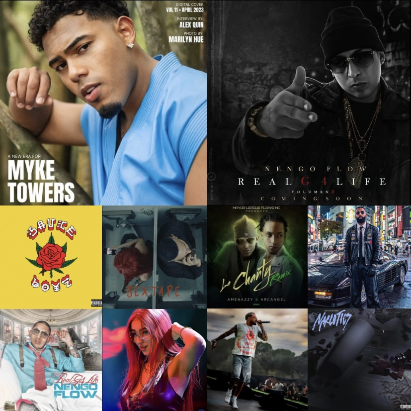

La música urbana latina se ha convertido en uno de los géneros más escuchados del mundo. Este sitio presenta información sobre artistas destacados como Ñengo Flow, Myke Towers, Eladio Carrión, Dei V, Amenazzy y De La Rose.
Explora cada sección para conocer su trayectoria, canciones más populares, álbumes destacados y su impacto en la industria musical.
🎤 Ñengo Flow es considerado una leyenda del género urbano.
🎤 Eladio Carrión fue nadador profesional antes de ser cantante.
🎤 Myke Towers comenzó publicando música en internet.